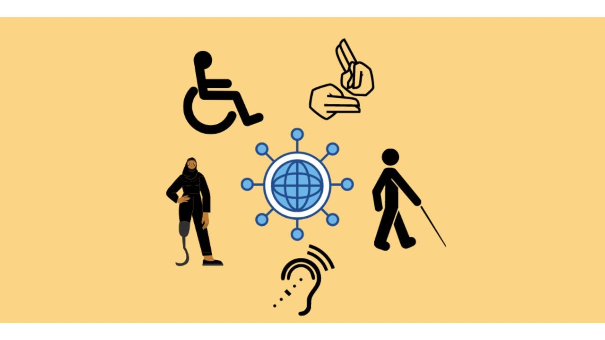
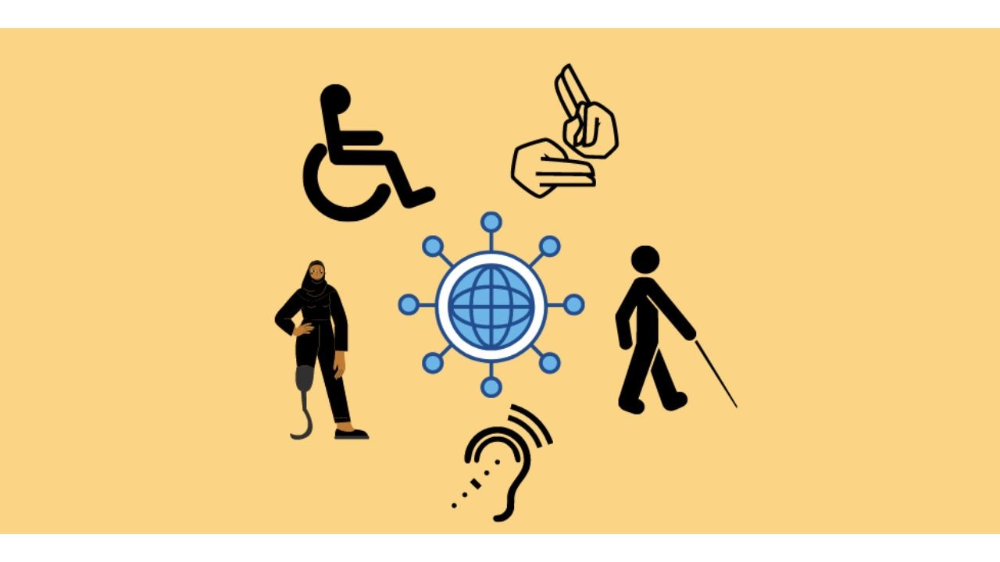

About Me
Hi! I'm Jill, a junior Computer Science & Engineering student at Texas A&M. I enjoy building software that is not only functional, but also easy for everyone to use, including people who rely on assistive technologies. I'm especially interested in how thoughtful design decisions like clear structure, readable layouts, and keyboard navigation can make technology more inclusive without making it more complicated.
Outside of class, I love traveling, working out, reading, and spending time with family and friends.
My Accessibility Interests
I'm most interested in practical accessibility features that improve everyday user experiences, such as:
- Designing interfaces that follow WCAG guidelines for contrast, structure, and readability
- Making websites usable with screen readers and keyboard-only navigation
- Providing captions, transcripts, and clear media controls
- Creating forms with helpful labels, instructions, and error messages
 

Links
Get in Touch
If we share interests, send me a note.